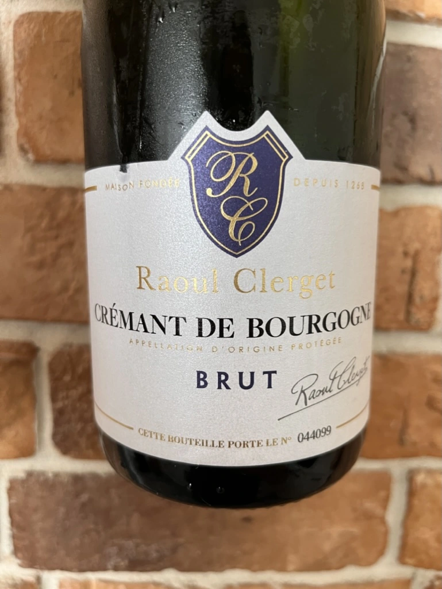

- Type
- White Sparkling, Brut
- Producer
- Raoul Clerget
- Vintage
- NV
- Location
- France, Crémant de Bourgogne AOC
- Grapes
- Chardonnay, Gamay, Pinot Noir
- Alcohol
- 12
- Sugar
- NA
- Price
- 675 UAH
- Cellar
- N/A
Ratings
2022-06-06 - 7.25
More than a year ago on a blind tasting party I’ve tried Chablis by Raoul Clerget. And based on impression from Raoul Clerget Chablis 2018, my expectation were not big. Crowd-pleasing Crémant, easy going and tasty. It’s full of dark bread croutons, cream and stone fruits. Well balanced, though sweetness is too high for me. On the other hand, I like croutons made of dark bread.